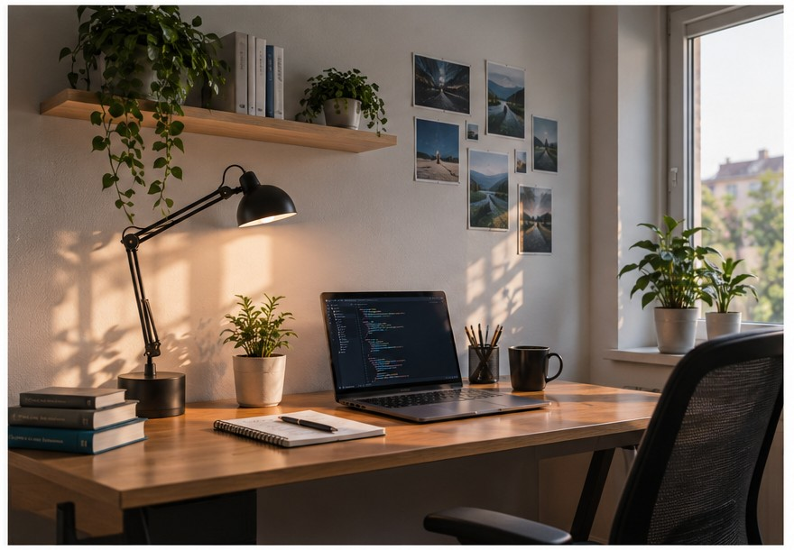

О проекте.
Сайт создан как учебная работа по HTML и CSS и оформлен в едином минималистичном стиле.
Просто, понятно, удобно
У сайта четыре самостоятельные страницы: главная, работы, контакты и информация о проекте. Между ними можно переходить с помощью общей навигации.
Внешняя таблица стилей задаёт цвета, шрифты, отступы, расположение элементов и адаптацию под небольшие экраны. Анимация добавляет странице движения, не мешая чтению.
Для всех изображений предусмотрен альтернативный текст. Если картинки отключены, вместо них отображаются текстовые описания.
Перейти к материалам →